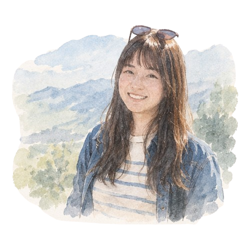

Curiosity
I like asking questions and exploring what lies beneath the surface. I'm curious about myself, others, and always trying to make sense of the world around me.

A Little About Me
I'm a Product Manager with a background in UX research, always curious about people, their experiences, emotions, and what shapes their choices.
That curiosity shapes how I approach problems, understand different perspectives, and turn insights into meaningful products.
02 — What Shapes My Perspective
I like asking questions and exploring what lies beneath the surface. I'm curious about myself, others, and always trying to make sense of the world around me.
I'm interested in how different experiences and backgrounds shape the way people think, feel, and act. The same situation can mean something entirely different to different people.
I believe understanding people starts with listening to their stories. There's always more to learn about someone's needs and feelings by taking time to listen.
03 — Beyond Work
Outside of work, I'm often immersed in stories through dramas, movies, animation, games, novels, and comics.
I enjoy exploring different worlds, following characters through their journeys, and sometimes getting a little too invested in their stories.